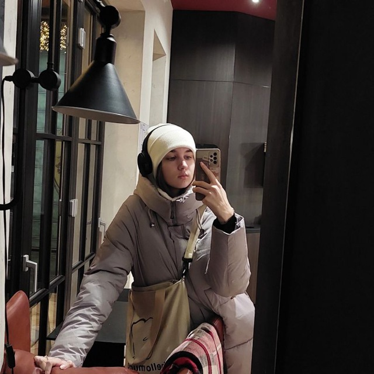

Тернопільський національний технічний
університет ім. Івана Пулюя
Факультет ФІС
Кафедра комп’ютерних наук
Як вижити на парах і не втратити себе
Пари — це як квест. Тільки без підказок, з мінімальним сном і з реальним ризиком відповісти не те, що питали.
Перший рік я думала, що зможу все: робити конспекти, слухати лектора й одночасно шукати каву у списаному гаманці.
Але з часом зрозуміла: виживає не найрозумніший, а той, хто вміє відпочивати на парах із розумним виразом обличчя.
Мої секрети виживання? Проста формула:
- Зошит з трьома сторінками – для вигляду.
- Погляд у точку на 15-й хвилині пари – глибока концентрація.
- І найголовніше – друг зліва, який знає тему. Або хоч знає, як знайти її в Google.
У кожного студента є внутрішній голос. У мене він каже: «Віко, не бійся... ще три пари — і додому!» І я тримаюсь.
Бо головне — не втратити себе. А особливо — свій студентський квиток.